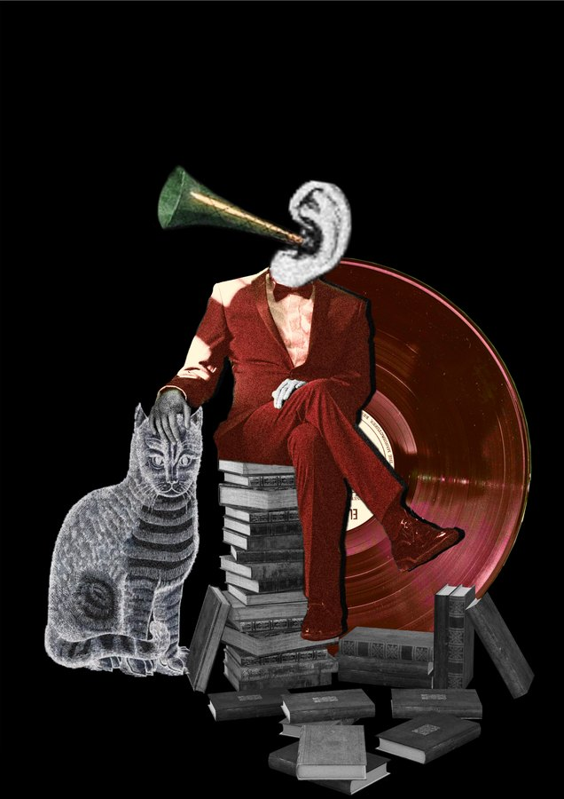
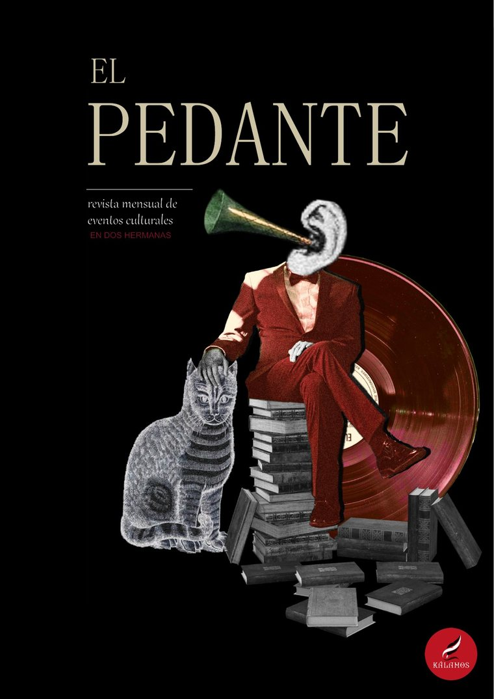

El Pedante
Una revista informativa y crítica: un espacio donde la cultura, el territorio y quienes lo habitan encuentran un lugar de diálogo. Se descarga gratis, cada mes.
Ir a los números
Qué es
Altavoz, no productor
El Pedante no pretende erigirse en productor de cultura, sino convertirse en altavoz de quienes la construyen desde otros lugares: personas, acontecimientos y microespacios que, lejos de los grandes circuitos, mantienen vivas otras formas de crear, pensar y relacionarse con la cultura.
Cansados de los productos prefabricados, diseñados para vender, queremos detenernos en aquello que corre el riesgo de quedar oculto: lo pequeño, lo local, lo singular y todo lo que todavía escapa a las lógicas de la cultura estandarizada.
Divulgar y centralizar aquello que mantiene despierta a una ciudad.
Último número
N.º 0 · Septiembre de 2026

El primero. Un mes con concierto, taller, festival de jazz y bastante más de lo que cabe en un cartel.
- 5 sept Celtas CortosAuditorio Municipal Los del Río · 22:00 h
- 9 · 16 · 23 sept Taller: Introducción a la LiteraturaBiblioteca Municipal · organiza Kálamos
- 25 · 26 · 27 sept XX Festival Soberao JazzCiudad del Conocimiento · ChoCo's Hot Seven, Guadaíra Big Band, Matheus Prado y EME·EME Proyect
- 25 sept Quinto Music Fest 2026Avenida Madre Paula Montalt · La Pegatina, La Mare, Alba Dreid y DJ Raúl · entrada libre
- Desde el 22 sept XX Festival Nacional de Teatro Aficionado Antonio Morillas RodríguezTeatro Municipal Juan Rodríguez Romero y Teatro Vistazul
- Todo el mes Club de lectura y encuentros poéticosBiblioteca Municipal · entrada libre
PDF · 12 páginas · 2,2 MB · gratuito
Números anteriores
Todavía no hay
El número 0 es el primero. A partir de aquí, uno cada mes, y este es el sitio donde se irán guardando todos.
Participar
Escribe en El Pedante
Aquí no solo cuadras tu agenda del mes. También puedes compartir con tus vecinas y vecinos tus propios poemas, artículos y trabajos, y leer los suyos.
Queremos que El Pedante se construya entre todos: un medio que no se limite a recomendar qué hacer en una ciudad, sino que se detenga a observarla, documentarla y construir entre todos una nueva mirada sobre ella.
Y si organizas un concierto, un taller o una exposición, cuéntanoslo y entra en el número del mes que viene. No cobramos por aparecer y no hace falta que seas nadie.
Quién la hace
- Dirección
- Diego Sánchez · Ana Martín · Sebastián Dávila
- Maquetación
- Sebastián Dávila
- Ilustración
- Ana Martín
- Edita
- Kálamos